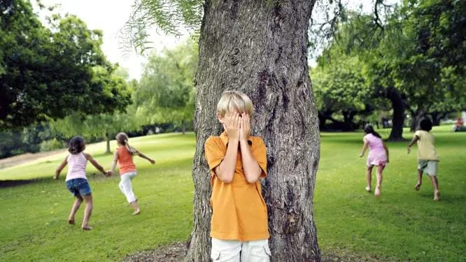

Carrom is a tabletop game of Indian origin in which players flick discs, attempting to knock them to the corners of the board.

It is played on a game board with numbered, gridded squares. A number of "ladders" and "snakes" are pictured on the board, each connecting two specific board squares.

One person is the “hider” and everybody else are the “seekers”. Everyone except the hider close their eyes and count. When the counting is done, all the seekers scatter and start searching for the hider. If one player finds the hider, then they join them in their hiding position.
Tug of war is a sport that pits two teams against each other in a test of strength: teams pull on opposite ends of a rope, with the goal being to bring the rope a certain distance in one direction against the force of the opposing team's pull.